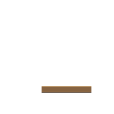
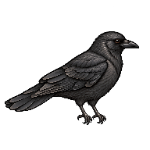
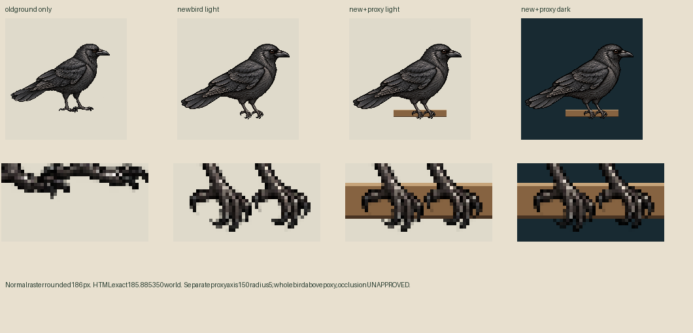
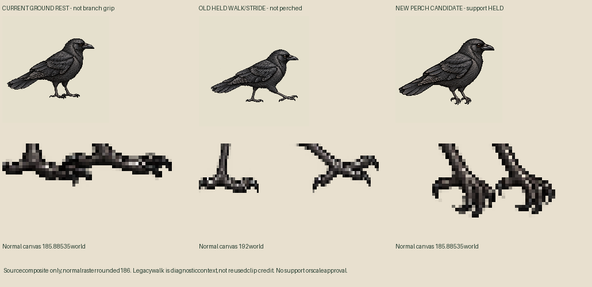
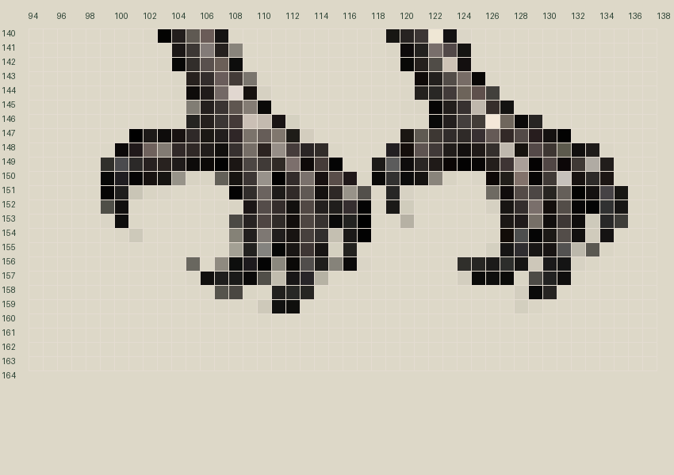

One actual new pose, not an animated cycle. Two curled toe silhouettes; body/scale and support/occlusion review pending. Producer held/unbound. No actual Mac geometry, source adoption or grip-pressure claim.
Output192px/world185.885350,density157/152,pivot111,150. CSS lays out185.875px at1CSS/world. Fixed proxy axis150,radius5output; not shifted to force a fit. Whole bird above proxy only: rear/front toe occlusion remains unproved. No mask/paint/warp.


The perching clip has only the new static pose; ground idle has only the exact old ground drawing. These are separate selections, with no entry/exit animation or walking fallback. New contacts are empty until curved-toe/surface/occlusion approval; actual source landmarks are custom annotations, not approved contacts. Play clock nominal90ticks; scheduler stops at firsttick89 while same still remains held. No Mac completion-event claim.



Actual-source toe annotations · Fixed proposed cylinder · Body/foot diagnostics · Cloud/live mapping preflight